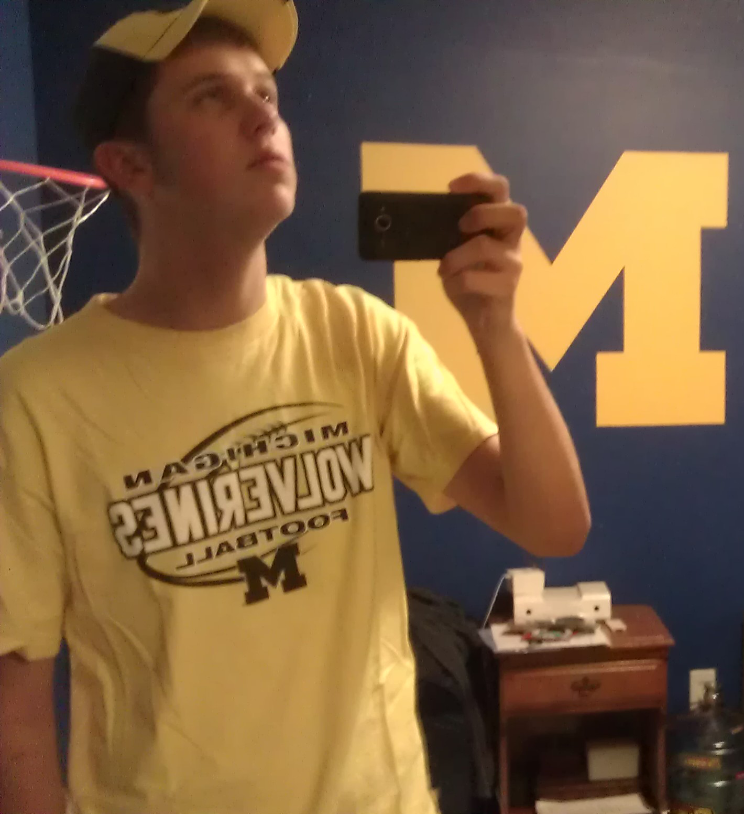
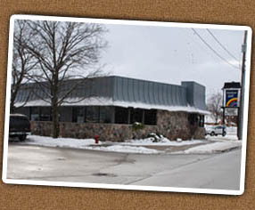

Letter From Your 17 Year Old Self
Now for the actual letter.
Well I have to say to myself, self, (mainly I say that because my Physics teacher Mr. Evele often says that and I figured you, I, should
remember that) It is currently 12:49 PM on Wednesday, November 30, 2011. This is the second day of working on this webpage. I'm going to sum up the previous little
why in my life.
Well first I'll start with Sophomore year, and the Cassie drama. However the first day of Sophomore year the teacher called "Andy Warsen" for attendence and you looked at him funny. Then
they called you and he looked at you funny. Everyone asked if you were related but you said no, later you found out that you are in fact third cousins. It just so happened that you had a
thing with Cassie and he had a thing with her younger sister Gabby. Small world. Well now you and Andy are best friends because both of those relationships fell out and you and Andy clicked.
It was Junior year that you and Andy really became friends. You went up to his cottage, and went to the football games together because he was a Sophomore and on JV.
You went to Kellogsville football games when they were in the playoffs because Grandville didn't make it sadly. Its funny because Mr. Dolloff was Andy's JV coach and is now
the teacher of the web design class your making this in. Well during Junior year you and Andy did News Years Eve at his house, made a lot of deserts (maybe too much) and were up ALL NIGHT
playing Nerf basketball which you had made a basketball court in his basement with tape on the floor, and its a year later and the tape is still there. Oh and lets not forget what you
got for Christmas that year from them, the "Fat Suit" with Captain Awesome on the back! Oh great times. Well zoom forward in time to Spring Break, right down the coast from Grandpa and Grandma
Dronkers condo, ah good times. Del Boca Vista as we called it because of a Seinfeld episode.
 Then came beginning of Senior year. September 11, 2011. The day Andy hit you with a boat. The sea was mighty that day my good man. Off the front of the boat. You felt a huge thud, got whisped around under water. Then realized you were in the water, thought it was strange. Felt sea weed and your exact thought was "ew, seaweed." You the felt a hand grab your wrist and slide up your hand and try to lock fingers, I believe it was Ally Mayer. She died over the summer. It was your first real funeral that you actually knew what was happening. It was rough. I love Ally. Miss her every day. But anyways you broke you collar bone and got cut up on your arm and leg and side. Look for your scars. Remember that day.
The Work Days.

You started working at Rainbow Grill a couple days after you turned 16. You went to a Bon Jovi concert in Kentucky, the Hullabaloo Concert or something. It was at Churchill Downs.
Branden Schwandner and Mitch went. Court was dating Branden at the time. Anyways back to work. You started out at the Rainbow as a dishwasher with Eric Zondervan and Mitch as the managers,
Doug owned it. Mitch liked Jersey Shore and gave everyone "Guido" names. Yours was "The Sanitation" Mitchs was "Tantalizer" I can't remember alot of them but thats okay. Anyways then you were a bus boy.
Then you eventually got moved up to Host in the back, that was during the Summer between Junior and Senior year. You kicked butt, Eric had left to became a insurance salesman and they hired Mike.
He was weird. He called you the Coach because you were amazing at your job. Then you became waiter, currently (being the time you wrote this) are a waiter, and actually work tonight which is now
Thursday, December 1st, 2011. At the Rainbow was Mustang Mike, Luke "The Jedi" Terpstra, Robby (Actually Simon) Koster, Kyle Koster (big guy with the little car-once bent down and tore his pants but
had an extra pair in his car) Britt and Court obviously, Ellynne! Emily VanOeveran, Eric VanOeveran, Kyra, Taylor and Max, Alyssa, Sam Buskard, Nate, Kody Ricker (Go Pack Go), Jose (Aiy Papi),
Erin (ditz but funny), and of course, Andy.
The stupid things you said and why you said them.
Someone would say something, you'd say "Thats kinda "weird' (weird being whatever the case called for)" then Andy would say "A little 'weird' (or whatever word you used instead of weird)" then you would say "Maybe too much" The first two statements are from the movie Eurotrip. The "Maybe too much" comes from the show Sports Night. Dan Rydell-"That Girl Generates alot of paperwork" Natalie-"I can hear you!" Danny-"You generate alot of paperwork.... maybe too much" The next would be "maize is corn." That is straight out of the movie Grown Ups. -Ron Burgandy? Obviously from Anchorman. "But that could be anything" Also from Grown Ups where Kevin James falls off the rope swing onto a bird says he heard a chirp and a crunch but that could be anything. "Put it in a pile and split it" Also from Grown Ups, David Spade says to Adam Sandler and his wife, his money her money my money, lets put it in a pile and split it.
Quote
"If I have given it my all and still do not win, I haven't lost. Others might remember winning or losing; I remember the journey" -Apolo Ohno
Some Favorite Movies (Not Necessarily In This Order)
- Bourne Trilogy
- Marvel Series
- Iron Man
- Iron Man 2
- Captain America
- Thor
- The Avengers
- Grown Ups
- The Other Guys
- Step Brothers
- Fly Boys
- Harry Potter Series
- Batman: The Dark Knight
- X-Men
- Eurotrip
Sweet Athletes
| Name | Team, Position, # | Information |
|---|---|---|
| Calvin Johnson | Detroit Lions, WR, 81 | "Megatron" He's a stud, throw him a fade, he's quick, he's tall, he can jump, all around amazing. |
| Greg Jennings | Green Bay Packers, WR, 85 | With a broken leg, Greg Jennings, Put da team on his back do, you can't stop him! Cross da plane, TOUCHDOWN! F**k you Gumby! |
| Denard Robinson | Michigan Wolverines, QB, 16 | "Shoelace" He's explosive, watching him run is intoxicating. Most rushing yards in the NCAA in 2010. |
| Ndamukong Suh | Detroit Lions, DE, 90 | Crowd would scream "SUUUHH!" Suh is a dominating player, so strong and bulky, looks like a teddy bear, maybe some anger issues. |
| Apolo Ohno | USA, Short Track Speed Skater | He's my inspiration, the reason I want to workout and get fit. Go Apolo! |
| Courtney Avery | Michigan Wolverines, CB, 5 | On NCAA Football you created a Michigan 'Dream Team' and he would get like 7 pick six's a game. Then in the 2011 U-M vs Ohio he got the game saving interception and the drought of 2,926 days was over. Go Blue! |